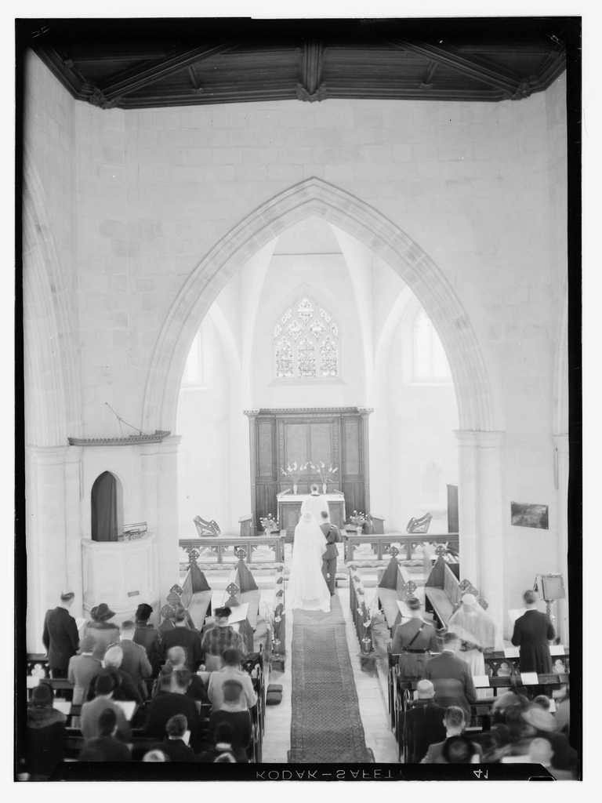
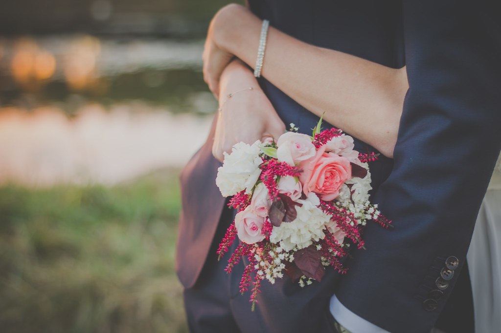
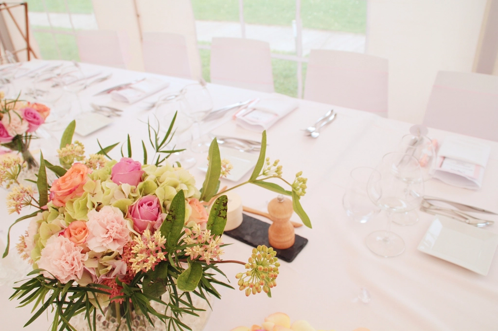
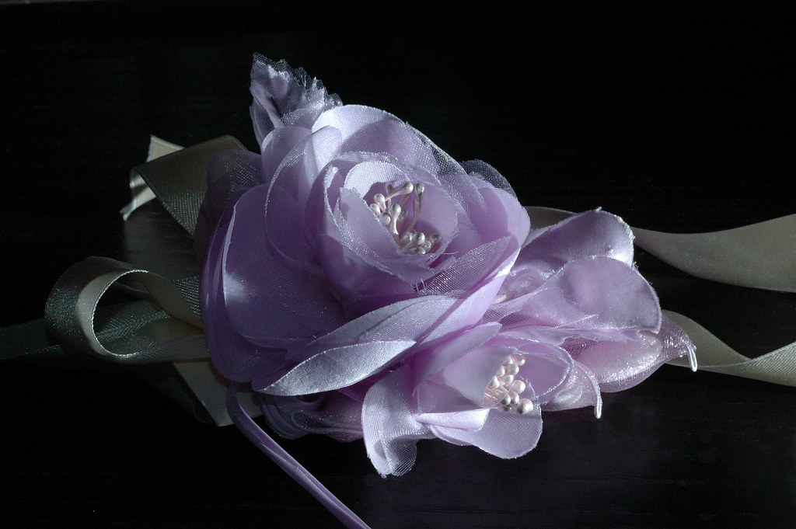

"Dan di antara tanda-tanda (kebesaran)-Nya ialah Dia menciptakan pasangan-pasangan untukmu dari jenismu sendiri, agar kamu cenderung dan merasa tenteram kepadanya..."
Dengan memohon rahmat dan ridho Allah Subhanahu Wa Ta'ala, kami mengundang Bapak/Ibu/Saudara/i untuk menghadiri resepsi pernikahan kami
Fulan, S.H.
Aisyah, S.Sos.
Kamis, 15 Oktober 2026
Kamis, 15 Oktober 2026
Pukul 08.00 WIB
Hadrah Garden, Lampeuneurut Ujong Blang,
Kec. Darul Imarah, Kab. Aceh Besar
Kamis, 15 Oktober 2026
Pukul 10.00 WIB
Hadrah Garden, Lampeuneurut Ujong Blang,
Kec. Darul Imarah, Kab. Aceh Besar




Kehadiran Anda adalah hadiah itu sendiri. Tetapi jika ingin memberi kami sesuatu yang lain, silakan salin nomor rekening di bawah ini.
Mohon konfirmasi kehadiran Anda sebelum tanggal 8 Oktober 2026.